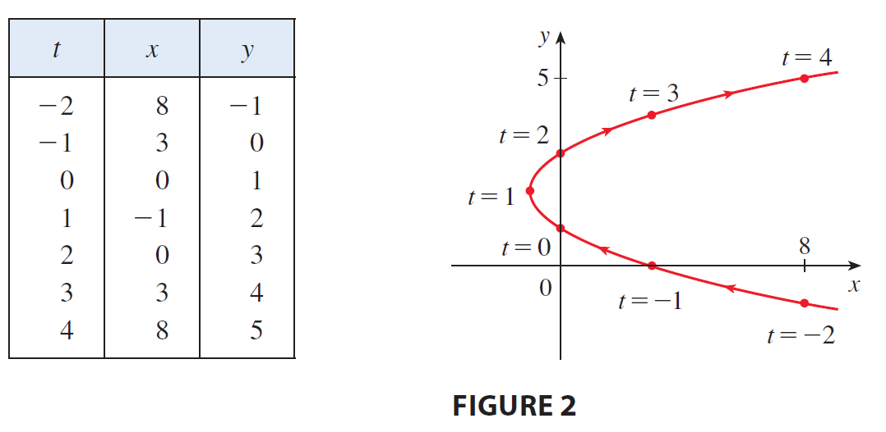
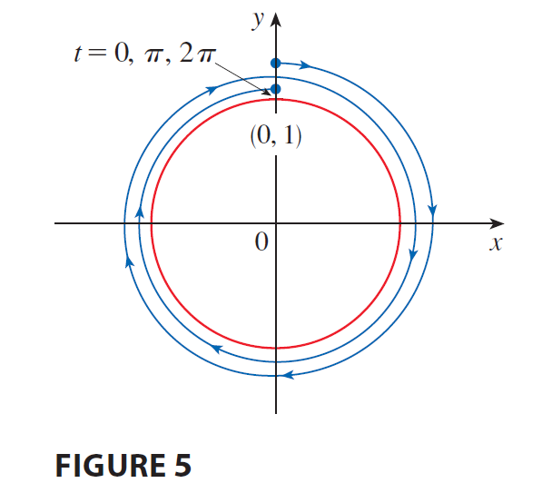

<!DOCTYPE html>
<html lang="zh-TW">
<head>
    <meta charset="UTF-8">
    <meta name="viewport" content="width=device-width, initial-scale=1.0">
    <title>微積分 (2) - 10.1 參數方程式 | Prof. Wu Wen-Chuan</title>
    
    <!-- 1. 核心樣式與庫載入 -->
    <!-- Tailwind CSS (樣式框架) -->
    <script src="https://cdn.tailwindcss.com"></script>
    
    <!-- React & ReactDOM (前端框架) -->
    <script crossorigin src="https://unpkg.com/react@18/umd/react.production.min.js"></script>
    <script crossorigin src="https://unpkg.com/react-dom@18/umd/react-dom.production.min.js"></script>
    
    <!-- Babel (JSX 編譯器) -->
    <script src="https://unpkg.com/@babel/standalone/babel.min.js"></script>

    <!-- KaTeX (數學公式渲染) -->
    <link rel="stylesheet" href="https://cdn.jsdelivr.net/npm/katex@0.16.9/dist/katex.min.css">
    <script src="https://cdn.jsdelivr.net/npm/katex@0.16.9/dist/katex.min.js"></script>
    
    <!-- 自定義樣式 -->
    <style>
        /* 平滑滾動 */
        html { scroll-behavior: smooth; }
        /* 自定義滾動條 */
        ::-webkit-scrollbar { width: 8px; }
        ::-webkit-scrollbar-track { background: #fdf2f8; }
        ::-webkit-scrollbar-thumb { background: #fbcfe8; border-radius: 4px; }
        ::-webkit-scrollbar-thumb:hover { background: #f472b6; }
        /* 數學公式容器樣式 - 允許水平滾動 */
        .math-display { overflow-x: auto; overflow-y: hidden; }
    </style>
</head>
<body class="bg-yellow-50 font-sans text-gray-800 selection:bg-pink-200">
    <div id="root"></div>

    <script type="text/babel">
        const { useState, useEffect, useRef } = React;

        // ==========================================
        // 2. 工具組件 (Utilities)
        // ==========================================

        /**
         * LaTeX 渲染組件
         */
        const Latex = ({ children, block = false, fontSize = '0.9em' }) => {
            const spanRef = useRef(null);

            useEffect(() => {
                if (window.katex && spanRef.current) {
                    try {
                        const content = typeof children === 'string' ? children : '';
                        window.katex.render(content, spanRef.current, {
                            throwOnError: false,
                            displayMode: block,
                        });
                    } catch (e) {
                        console.warn("KaTeX render error", e);
                        if (spanRef.current) spanRef.current.innerText = String(children);
                    }
                }
            }, [children, block]);

            return <span ref={spanRef} style={{ margin: '0 4px', display: block ? 'block' : 'inline-block', fontSize: fontSize }} />;
        };

        // ==========================================
        // 3. UI 子組件 (Sub-components)
        // ==========================================

        const Navbar = ({ t, isMenuOpen, setIsMenuOpen, toggleLang }) => {
            return (
                <nav className="sticky top-0 z-50 w-full bg-white/90 px-6 py-4 shadow-md backdrop-blur-md transition-all">
                    <div className="flex items-center justify-between max-w-7xl mx-auto">
                        <div className="flex flex-col">
                            <h1 className="bg-gradient-to-r from-pink-500 to-purple-500 bg-clip-text text-2xl font-black tracking-tight text-transparent md:text-3xl">
                                {t.title}
                            </h1>
                            <span className="text-base font-medium text-gray-500 md:text-xl">
                                {t.teacher}
                            </span>
                        </div>

                        <div className="hidden items-center gap-6 md:flex">
                            {t.menu.map((item, i) => (
                                <a key={i} href={`#part${i+1}`} className="text-xl font-bold text-gray-600 hover:text-pink-500 transition-colors">{item}</a>
                            ))}
                            <button 
                                onClick={toggleLang}
                                className="flex items-center gap-2 rounded-full bg-purple-100 px-5 py-2 text-lg font-bold text-purple-700 transition-all hover:bg-purple-200 hover:shadow-md active:scale-95"
                            >
                                <svg xmlns="http://www.w3.org/2000/svg" width="20" height="20" viewBox="0 0 24 24" fill="none" stroke="currentColor" strokeWidth="2" strokeLinecap="round" strokeLinejoin="round"><circle cx="12" cy="12" r="10"/><line x1="2" x2="22" y1="12" y2="12"/><path d="M12 2a15.3 15.3 0 0 1 4 10 15.3 15.3 0 0 1-4 10 15.3 15.3 0 0 1-4-10 15.3 15.3 0 0 1 4-10z"/></svg>
                                {t.langBtn}
                            </button>
                        </div>

                        <button 
                            className="rounded-full bg-gray-100 p-2 text-gray-600 md:hidden hover:bg-gray-200"
                            onClick={() => setIsMenuOpen(!isMenuOpen)}
                        >
                            <svg xmlns="http://www.w3.org/2000/svg" width="24" height="24" viewBox="0 0 24 24" fill="none" stroke="currentColor" strokeWidth="2" strokeLinecap="round" strokeLinejoin="round"><line x1="4" x2="20" y1="12" y2="12"/><line x1="4" x2="20" y1="6" y2="6"/><line x1="4" x2="20" y1="18" y2="18"/></svg>
                        </button>
                    </div>

                    {isMenuOpen && (
                        <div className="mt-4 flex flex-col gap-4 border-t border-gray-100 pt-4 md:hidden">
                            {t.menu.map((item, i) => (
                                <a key={i} href={`#part${i+1}`} onClick={() => setIsMenuOpen(false)} className="px-2 py-1 text-lg font-bold text-gray-600">{item}</a>
                            ))}
                            <button 
                                onClick={() => { toggleLang(); setIsMenuOpen(false); }}
                                className="flex w-full items-center justify-center gap-2 rounded-xl bg-purple-100 py-3 font-bold text-purple-700"
                            >
                                <svg xmlns="http://www.w3.org/2000/svg" width="20" height="20" viewBox="0 0 24 24" fill="none" stroke="currentColor" strokeWidth="2" strokeLinecap="round" strokeLinejoin="round"><circle cx="12" cy="12" r="10"/><line x1="2" x2="22" y1="12" y2="12"/><path d="M12 2a15.3 15.3 0 0 1 4 10 15.3 15.3 0 0 1-4 10 15.3 15.3 0 0 1-4-10 15.3 15.3 0 0 1 4-10z"/></svg>
                                {t.langBtn}
                            </button>
                        </div>
                    )}
                </nav>
            );
        };

        const UnitHeader = ({ t }) => (
            <div className="mb-8 text-center animate-in fade-in zoom-in duration-500">
                <h2 className="mb-2 text-4xl font-black text-black md:text-5xl">
                    <span className="mr-3 text-black">{t.unitId}</span>
                    {t.unitTitle}
                </h2>
                <p className="text-2xl font-bold text-gray-500">{t.unitSub}</p>
            </div>
        );

        const Part1 = ({ t }) => (
            <section id="part1" className="scroll-mt-32 rounded-[2rem] bg-pink-100 p-8 shadow-lg shadow-pink-100/50 md:p-12 transition-all hover:shadow-xl">
                <div className="mb-6 flex items-center gap-3">
                    <div className="flex h-12 w-12 items-center justify-center rounded-full bg-white text-pink-500 shadow-sm">
                        <svg xmlns="http://www.w3.org/2000/svg" width="28" height="28" viewBox="0 0 24 24" fill="none" stroke="currentColor" strokeWidth="2" strokeLinecap="round" strokeLinejoin="round"><path d="M2 3h6a4 4 0 0 1 4 4v14a3 3 0 0 0-3-3H2z"/><path d="M22 3h-6a4 4 0 0 0-4 4v14a3 3 0 0 1 3-3h7z"/></svg>
                    </div>
                    <h2 className="text-2xl font-black text-pink-700 md:text-3xl">{t.part1Title}</h2>
                </div>
                
                <div className="space-y-8 rounded-3xl bg-white/60 p-6 md:p-8">
                    <h3 className="text-2xl font-bold text-gray-800">{t.part1Topic}</h3>
                    <div className="text-xl leading-relaxed text-gray-700">{t.part1Desc}</div>

                    {/* 觀念類比區塊 */}
                    <div className="bg-purple-50 py-4 px-6 rounded-2xl border-l-8 border-purple-400">
                        <h4 className="font-bold text-purple-800 text-xl mb-2 flex items-center gap-2">
                            <span>💡</span> {t.analogyTitle}
                        </h4>
                        <div className="text-xl text-gray-700 leading-relaxed">
                            {t.analogyDesc}
                        </div>
                    </div>
                    
                    {/* Basic Formula Block */}
                    <div className="bg-pink-50 py-4 px-6 rounded-2xl border-l-8 border-pink-400">
                        <h4 className="font-bold text-pink-800 text-xl mb-2">{t.part1Step1}</h4>
                        <div className="text-xl text-gray-700 mb-4">{t.part1Step1Desc}</div>
                        <div className="text-center my-4 math-display bg-white/50 p-4 rounded-xl">
                            <Latex block>{'\\displaystyle x = f(t), \\quad y = g(t), \\quad a \\le t \\le b'}</Latex>
                        </div>
                    </div>

                    {/* Elimination Block */}
                    <div className="bg-white p-6 rounded-2xl border-l-8 border-pink-400 shadow-sm">
                        <h4 className="font-bold text-pink-800 text-xl mb-4">{t.part1Step2}</h4>
                        <div className="text-xl text-gray-700 mb-4">{t.part1Step2Desc}</div>
                        <ul className="list-disc pl-6 space-y-2 text-lg text-gray-700">
                            <li>
                                <span className="font-bold">{t.case1}</span> 
                                <span className="ml-2">{t.case1Desc}</span>
                            </li>
                            <li>
                                <span className="font-bold">{t.case2}</span> 
                                <span className="ml-2"><Latex fontSize="0.9em">{'\\sin^2 t + \\cos^2 t = 1'}</Latex></span>
                            </li>
                        </ul>
                    </div>
                </div>
            </section>
        );

        const Part2 = ({ t, activeExList, activeExampleId, setActiveExampleId }) => {
            const activeEx = activeExList.find(e => e.id === activeExampleId) || activeExList[0];
            return (
                <section id="part2" className="scroll-mt-32 rounded-[2rem] bg-blue-100 p-8 shadow-lg shadow-blue-100/50 md:p-12 transition-all hover:shadow-xl">
                    <div className="mb-6 flex items-center gap-3">
                        <div className="flex h-12 w-12 items-center justify-center rounded-full bg-white text-blue-500 shadow-sm">
                            <svg xmlns="http://www.w3.org/2000/svg" width="28" height="28" viewBox="0 0 24 24" fill="none" stroke="currentColor" strokeWidth="2" strokeLinecap="round" strokeLinejoin="round"><rect width="16" height="20" x="4" y="2" rx="2"/><line x1="8" x2="16" y1="6" y2="6"/><line x1="16" x2="16" y1="14" y2="18"/><path d="M16 10h.01"/><path d="M12 10h.01"/><path d="M8 10h.01"/><path d="M12 14h.01"/><path d="M8 14h.01"/><path d="M12 18h.01"/><path d="M8 18h.01"/></svg>
                        </div>
                        <h2 className="text-2xl font-black text-blue-700 md:text-3xl">{t.part2Title}</h2>
                    </div>

                    <div className="mb-8 flex flex-wrap gap-3">
                        {activeExList.map((ex) => (
                            <button
                                key={ex.id}
                                onClick={() => setActiveExampleId(ex.id)}
                                className={`rounded-full px-6 py-3 text-lg font-bold transition-all shadow-sm ${
                                    activeExampleId === ex.id
                                        ? "bg-blue-600 text-white shadow-lg shadow-blue-500/30 scale-105"
                                        : "bg-white text-blue-600 hover:bg-blue-50 hover:scale-105"
                                }`}
                            >
                                {t.btnLabel} {ex.id}
                            </button>
                        ))}
                    </div>

                    <div className="space-y-8">
                        <div key={activeEx.id} className="rounded-3xl bg-white/60 p-6 md:p-8 shadow-inner">
                            <div className="border-b-2 border-blue-200 pb-6 mb-6">
                                <h3 className="text-2xl font-bold text-blue-800 mb-3">{activeEx.title}</h3>
                                <div className="flex flex-wrap items-center gap-4 text-lg font-bold text-gray-800">
                                    <span className="bg-blue-100 text-blue-800 px-3 py-1 rounded-lg">{t.btnLabel} {activeEx.id}:</span>
                                    <div className="rounded-xl bg-white px-6 py-3 text-blue-600 shadow-md ring-1 ring-blue-100 math-display">
                                        <Latex block fontSize="0.9em">{activeEx.math}</Latex>
                                    </div>
                                </div>
                            </div>

                            <div className="space-y-6">
                                {activeEx.steps.map((step, idx) => (
                                    <div key={idx} className="group rounded-2xl bg-white p-6 ring-2 ring-blue-200 transition-all hover:shadow-lg hover:ring-blue-400">
                                        <h4 className="mb-3 flex items-center gap-3 text-lg font-bold text-blue-700">
                                            <span className="flex h-8 w-8 items-center justify-center rounded-full bg-blue-600 text-sm text-white font-black">
                                                {idx + 1}
                                            </span>
                                            {step.t}
                                        </h4>
                                        <div className="mb-4 text-lg text-gray-600 pl-11">{step.d}</div>
                                        <div className="bg-blue-50 p-4 text-center text-lg font-bold text-blue-900 rounded-xl math-display border border-blue-100">
                                            <Latex block fontSize="0.9em">{step.m}</Latex>
                                        </div>
                                    </div>
                                ))}
                            </div>
                        </div>
                    </div>
                </section>
            );
        };

        const Part3 = ({ t, activePracList, activePracticeId, setActivePracticeId }) => {
            const activePrac = activePracList.find(p => p.id === activePracticeId) || activePracList[0];
            return (
                <section id="part3" className="scroll-mt-32 rounded-[2rem] bg-green-100 p-8 shadow-lg shadow-green-100/50 md:p-12 transition-all hover:shadow-xl">
                    <div className="flex items-center gap-3 mb-6">
                        <div className="flex h-12 w-12 items-center justify-center rounded-full bg-white text-green-500 shadow-sm">
                            <svg xmlns="http://www.w3.org/2000/svg" width="28" height="28" viewBox="0 0 24 24" fill="none" stroke="currentColor" strokeWidth="2" strokeLinecap="round" strokeLinejoin="round"><path d="m12 19 7-7 3 3-7 7-3-3z"/><path d="m18 13-1.5-7.5L2 2l3.5 14.5L13 18l5-5z"/><path d="m2 2 7.586 7.586"/><circle cx="11" cy="11" r="2"/></svg>
                        </div>
                        <h2 className="text-2xl font-black text-green-700 md:text-3xl">{t.part3Title}</h2>
                    </div>

                    <div className="mb-8 flex flex-wrap gap-3">
                        {activePracList.map((p) => (
                            <button
                                key={p.id}
                                onClick={() => setActivePracticeId(p.id)}
                                className={`rounded-full px-6 py-3 text-lg font-bold transition-all shadow-sm ${
                                    activePracticeId === p.id
                                        ? "bg-green-600 text-white shadow-lg shadow-green-500/30 scale-105"
                                        : "bg-white text-green-600 hover:bg-green-50 hover:scale-105"
                                }`}
                            >
                                {t.btnPracticeLabel} {p.id}
                            </button>
                        ))}
                    </div>

                    <div className="mt-4 rounded-3xl bg-white/60 p-6 md:p-8">
                        <p className="mb-8 text-xl text-gray-700 font-medium">{t.part3Desc}</p>
                        
                        <div key={activePrac.id} className="rounded-3xl bg-white p-6 md:p-8 shadow-md border-2 border-green-300 animate-in fade-in slide-in-from-bottom-4 duration-300">
                            <div className="border-b-2 border-green-100 pb-6 mb-6">
                                <h3 className="text-2xl font-bold text-green-800 mb-3">{activePrac.title}</h3>
                                <div className="flex flex-wrap items-center gap-4 text-lg font-bold text-gray-800">
                                    <span className="bg-green-100 text-green-800 px-3 py-1 rounded-lg">{t.btnPracticeLabel} {activePrac.id}:</span>
                                    <div className="rounded-xl bg-white px-6 py-3 text-green-700 shadow-md ring-1 ring-green-100 math-display">
                                        <Latex block fontSize="0.9em">{activePrac.math}</Latex>
                                    </div>
                                </div>
                            </div>

                            <div className="mt-6 space-y-6">
                                {activePrac.steps.map((step, idx) => (
                                    <div key={idx} className="group rounded-2xl bg-white p-6 ring-2 ring-green-200 transition-all hover:shadow-lg hover:ring-green-400">
                                        <h4 className="mb-3 flex items-center gap-3 text-lg font-bold text-green-600">
                                            <span className="flex h-8 w-8 items-center justify-center rounded-full bg-green-600 text-sm text-white font-black">
                                                {idx + 1}
                                            </span>
                                            {step.t}
                                        </h4>
                                        <div className="mb-4 text-lg text-gray-600 pl-11">{step.d}</div>
                                        <div className="bg-green-50 p-4 text-center text-lg font-bold text-green-800 rounded-xl math-display border border-green-100">
                                            <Latex block fontSize="0.9em">{step.m}</Latex>
                                        </div>
                                    </div>
                                ))}
                            </div>
                        </div>
                    </div>
                </section>
            );
        };

        const App = () => {
            const [lang, setLang] = useState('zh');
            const [katexLoaded, setKatexLoaded] = useState(false);
            const [isMenuOpen, setIsMenuOpen] = useState(false);
            const [activeExampleId, setActiveExampleId] = useState(1);
            const [activePracticeId, setActivePracticeId] = useState(1);

            useEffect(() => {
                const checkKatex = setInterval(() => {
                    if (window.katex) {
                        setKatexLoaded(true);
                        clearInterval(checkKatex);
                    }
                }, 100);
                setTimeout(() => setKatexLoaded(true), 3000); 
                return () => clearInterval(checkKatex);
            }, []);

            const toggleLang = () => {
                setLang(prev => prev === 'zh' ? 'en' : 'zh');
                setIsMenuOpen(false);
            };

            const t = DATA[lang];
            const activeExList = EXAMPLES_DATA[lang];
            const activePracList = PRACTICE_DATA[lang];

            if (!katexLoaded) {
                return (
                    <div className="flex h-screen w-full items-center justify-center bg-yellow-50 text-xl font-bold text-gray-500">
                        Loading Math Engine...
                    </div>
                );
            }

            return (
                <div className="min-h-screen bg-yellow-50 font-sans text-gray-800 selection:bg-pink-200">
                    <Navbar t={t} isMenuOpen={isMenuOpen} setIsMenuOpen={setIsMenuOpen} toggleLang={toggleLang} />
                    <main className="mx-auto mt-16 flex max-w-6xl flex-col gap-16 px-4 pb-20">
                        <UnitHeader t={t} />
                        <Part1 t={t} />
                        <Part2 t={t} activeExList={activeExList} activeExampleId={activeExampleId} setActiveExampleId={setActiveExampleId} />
                        <Part3 t={t} activePracList={activePracList} activePracticeId={activePracticeId} setActivePracticeId={setActivePracticeId} />
                    </main>
                    <footer className="mt-12 bg-white py-12 text-center text-gray-400 border-t border-gray-100">
                        <p className="text-lg">© 2025 Calculus (2) Course. Prof. Wu Wen-Chuan.</p>
                        <p className="mt-2 text-sm">Designed for Student Success</p>
                    </footer>
                </div>
            );
        };

        // ==========================================
        // 4. 資料定義 (Data)
        // ==========================================

        const DATA = {
            zh: {
                title: "微積分 (2)",
                teacher: "授課老師: 吳文銓 (Prof. Wu Wen-Chuan)",
                menu: ["核心概念", "範例說明", "動手練習"],
                langBtn: "English",
                unitId: "10.1",
                unitTitle: "參數方程式",
                unitSub: "Curves Defined by Parametric Equations",
                part1Title: "第一部分：核心概念",
                part1Topic: "由參數方程式定義的曲線",
                part1Desc: (
                    <span>
                        在過去，我們習慣將曲線表示為 <Latex>{'y = f(x)'}</Latex>，但這限制了曲線必須通過「鉛直限制測試」。參數方程式打破了這個限制，它將 <Latex>{'x'}</Latex> 與 <Latex>{'y'}</Latex> 分別表示為第三個變數 <Latex>{'t'}</Latex>（參數）的函數。
                    </span>
                ),
                analogyTitle: "觀念類比：GPS 軌跡紀錄器",
                analogyDesc: (
                    <span>
                        普通的函數 <Latex>{'y = f(x)'}</Latex> 像是一張固定的地圖照片，你只看到路徑。而參數方程式則像是 GPS 紀錄：它不但告訴你每一秒鐘（參數 <Latex>{'t'}</Latex>）你在座標上的什麼位置（<Latex>{'x'}</Latex> 和 <Latex>{'y'}</Latex>），還紀錄了你是從哪裡開始出發、往哪個方向走、以及走得有多快。
                    </span>
                ),
                part1Step1: "基本定義 (Definition)",
                part1Step1Desc: (
                    <span>
                        當 <Latex>{'t'}</Latex> 在區間內變化時，點 <Latex>{'(x, y) = (f(t), g(t))'}</Latex> 在平面上描繪出的圖形稱為參數曲線。
                    </span>
                ),
                part1Step2: "核心技巧：消去參數 (Eliminating the Parameter)",
                part1Step2Desc: (
                    <span>
                        為了識別曲線的幾何形狀，我們常試圖從方程式中消去 <Latex>{'t'}</Latex>，得到 <Latex>{'x'}</Latex> 與 <Latex>{'y'}</Latex> 的笛卡兒方程式。
                    </span>
                ),
                case1: "代入法 (Substitution):",
                case1Desc: "從一個式子解出 t，代入另一個式子。",
                case2: "三角恆等式 (Trig Identity):",
                part2Title: "第二部分：範例說明",
                part3Title: "第三部分：動手練習",
                part3Desc: "請嘗試解決以下題目，並參考詳細步驟核對：",
                btnLabel: "例題",
                btnPracticeLabel: "練習題"
            },
            en: {
                title: "Calculus (2)",
                teacher: "Instructor: Prof. Wu Wen-Chuan",
                menu: ["Concepts", "Examples", "Practice"],
                langBtn: "繁體中文",
                unitId: "10.1",
                unitTitle: "Parametric Equations",
                unitSub: "Curves Defined by Parametric Equations",
                part1Title: "Part 1: Core Concepts",
                part1Topic: "Defining Curves with Parameters",
                part1Desc: (
                    <span>
                        Previously, curves were defined as <Latex>{'y = f(x)'}</Latex>, which must pass the vertical line test. Parametric equations express both <Latex>{'x'}</Latex> and <Latex>{'y'}</Latex> as functions of a third variable <Latex>{'t'}</Latex> (the parameter).
                    </span>
                ),
                analogyTitle: "Analogy: GPS Tracker",
                analogyDesc: (
                    <span>
                        A regular function <Latex>{'y = f(x)'}</Latex> is like a static map photo showing a path. Parametric equations are like a GPS recording: they tell you where you are (<Latex>{'x'}</Latex> and <Latex>{'y'}</Latex>) at every second (<Latex>{'t'}</Latex>), where you started, the direction of motion, and your speed.
                    </span>
                ),
                part1Step1: "Definition",
                part1Step1Desc: (
                    <span>
                        As <Latex>{'t'}</Latex> varies, the set of points <Latex>{'(x, y) = (f(t), g(t))'}</Latex> traces a parametric curve.
                    </span>
                ),
                part1Step2: "Eliminating the Parameter",
                part1Step2Desc: (
                    <span>
                        To identify the shape of the curve, we often eliminate <Latex>{'t'}</Latex> to find a Cartesian equation relating <Latex>{'x'}</Latex> and <Latex>{'y'}</Latex> directly.
                    </span>
                ),
                case1: "Substitution:",
                case1Desc: "Solve for t in one equation and substitute into the other.",
                case2: "Trig Identity:",
                part2Title: "Part 2: Examples",
                part3Title: "Part 3: Practice",
                part3Desc: "Solve the problems and check the detailed steps below:",
                btnLabel: "Ex",
                btnPracticeLabel: "Q"
            }
        };

        const EXAMPLES_DATA = {
            zh: [
                {
                    id: 1, label: "Ex 1", title: "拋物線 (Parabola) (P.662)",
                    math: "\\displaystyle x = t^2 - 2t, \\quad y = t + 1",
                    steps: [
                        { t: "Step 1: 觀察數值 (Check Values)", d: (<span>可以先代入幾個數值觀察趨勢。例如 <Latex>{'t=0 \\to (0,1)'}</Latex>, <Latex>{'t=1 \\to (-1,2)'}</Latex>, <Latex>{'t=2 \\to (0,3)'}</Latex>。</span>), m: "\\displaystyle \\text{Points: } (0,1), (-1,2), (0,3)" },
                        { t: "Step 2: 解出參數 t (Solve for t)", d: (<span>從 <Latex>{'y'}</Latex> 的式子較容易解出 <Latex>{'t'}</Latex>。</span>), m: "\\displaystyle y = t + 1 \\implies t = y - 1" },
                        { t: "Step 3: 代入消去 (Substitute)", d: (<span>將 <Latex>{'t = y - 1'}</Latex> 代入 <Latex>{'x'}</Latex> 的方程式。</span>), m: "\\displaystyle x = (y-1)^2 - 2(y-1)" },
                        { t: "Step 4: 化簡 (Simplify)", d: (<span>展開整理得到笛卡兒方程式。</span>), m: "\\displaystyle x = (y^2 - 2y + 1) - (2y - 2) = y^2 - 4y + 3" },
                        { t: "Step 5: 結論 (Conclusion)", d: (<span>這是一個開口向右的拋物線，頂點在 <Latex>{'(-1, 2)'}</Latex>。 <br/>  </span>), m: "\\displaystyle x = (y-2)^2 - 1" }
                    ]
                },
                {
                    id: 2, label: "Ex 2", title: "單位圓 (Unit Circle) (P.663)",
                    math: "\\displaystyle x = \\cos t, \\quad y = \\sin t, \\quad 0 \\le t \\le 2\\pi",
                    steps: [
                        { t: "Step 1: 利用三角恆等式 (Trig Identity)", d: (<span>觀察 <Latex>{'x'}</Latex> 與 <Latex>{'y'}</Latex> 包含正弦與餘弦，利用平方關係消去 <Latex>{'t'}</Latex>。</span>), m: "\\displaystyle x^2 + y^2 = (\\cos t)^2 + (\\sin t)^2 = 1" },
                        { t: "Step 2: 識別圖形 (Identify Shape)", d: (<span>這是一個圓心在原點 <Latex>{'(0,0)'}</Latex>，半徑為 1 的圓。</span>), m: "\\displaystyle x^2 + y^2 = 1" },
                        { t: "Step 3: 判定方向 (Determine Direction)", d: (<span>代入 <Latex>{'t=0 \\to (1,0)'}</Latex>；代入 <Latex>{'t=\\pi/2 \\to (0,1)'}</Latex>。點是逆時針移動。</span>), m: "\\displaystyle (1,0) \\xrightarrow{CCW} (0,1)" },
                        { t: "Step 4: 完整性 (Completeness)", d: (<span><Latex>{'0 \\le t \\le 2\\pi'}</Latex> 涵蓋了整個圓周一次。 <br/>  </span>), m: "\\displaystyle \\text{Full circle traced once CCW}" }
                    ]
                },
                {
                    id: 3, label: "Ex 3", title: "繞行兩次的圓 (Circle Traced Twice) (P.664)",
                    math: "\\displaystyle x = \\sin 2t, \\quad y = \\cos 2t, \\quad 0 \\le t \\le 2\\pi",
                    steps: [
                        { t: "Step 1: 消去參數 (Eliminate Parameter)", d: (<span>利用平方和恆等式。</span>), m: "\\displaystyle x^2 + y^2 = (\\sin 2t)^2 + (\\cos 2t)^2 = 1" },
                        { t: "Step 2: 判定起點 (Start Point)", d: (<span>代入 <Latex>{'t=0'}</Latex>。</span>), m: "\\displaystyle x(0) = 0, \\quad y(0) = 1 \\implies (0, 1)" },
                        { t: "Step 3: 判定方向 (Direction)", d: (<span>代入 <Latex>{'t=\\pi/4'}</Latex>。從 <Latex>{'(0,1)'}</Latex> 走到 <Latex>{'(1,0)'}</Latex>，這是順時針方向。</span>), m: "\\displaystyle x(\\pi/4) = 1, \\quad y(\\pi/4) = 0 \\implies (1, 0)" },
                        { t: "Step 4: 週期性 (Periodicity)", d: (<span><Latex>{'2t'}</Latex> 的週期是 <Latex>{'\\pi'}</Latex>。當 <Latex>{'t'}</Latex> 走到 <Latex>{'2\\pi'}</Latex> 時，角度轉了 <Latex>{'4\\pi'}</Latex>。 <br/>  </span>), m: "\\displaystyle \\text{Circle traced twice, Clockwise}" }
                    ]
                },
                {
                    id: 4, label: "Ex 4", title: "一般圓 (Circle with Center) (P.664)",
                    math: "\\displaystyle \\text{Center } (h, k), \\text{ Radius } r",
                    steps: [
                        { t: "Step 1: 單位圓推廣 (Generalize)", d: (<span>單位圓為 <Latex>{'(\\cos t, \\sin t)'}</Latex>。放大 <Latex>{'r'}</Latex> 倍變成 <Latex>{'(r\\cos t, r\\sin t)'}</Latex>。</span>), m: "\\displaystyle x = r\\cos t, \\quad y = r\\sin t" },
                        { t: "Step 2: 平移中心 (Shift Center)", d: (<span>將中心從 <Latex>{'(0,0)'}</Latex> 移到 <Latex>{'(h,k)'}</Latex>，只需將 <Latex>{'x'}</Latex> 加 <Latex>{'h'}</Latex>，<Latex>{'y'}</Latex> 加 <Latex>{'k'}</Latex>。</span>), m: "\\displaystyle x = h + r\\cos t, \\quad y = k + r\\sin t" },
                        { t: "Step 3: 驗證 (Verify)", d: (<span>驗證其滿足圓的方程式 <Latex>{'(x-h)^2 + (y-k)^2 = r^2'}</Latex>。 <br/>  </span>), m: "\\displaystyle (h+r\\cos t - h)^2 + (k+r\\sin t - k)^2 = r^2(\\cos^2 t + \\sin^2 t) = r^2" }
                    ]
                },
                {
                    id: 6, label: "Ex 6", title: "拋物線片段 (Parabola Segment) (P.665)",
                    math: "\\displaystyle x = \\sin t, \\quad y = \\sin^2 t",
                    steps: [
                        { t: "Step 1: 消去參數 (Eliminate Parameter)", d: (<span>直接觀察 <Latex>{'y'}</Latex> 與 <Latex>{'x'}</Latex> 的關係。</span>), m: "\\displaystyle y = (\\sin t)^2 = x^2" },
                        { t: "Step 2: 檢查限制範圍 (Check Constraints)", d: (<span>因為 <Latex>{'x = \\sin t'}</Latex>，所以 <Latex>{'x'}</Latex> 的範圍被限制在 <Latex>{'[-1, 1]'}</Latex>。</span>), m: "\\displaystyle -1 \\le x \\le 1" },
                        { t: "Step 3: 描述圖形 (Describe)", d: (<span>這不是整條拋物線 <Latex>{'y=x^2'}</Latex>，而只是其中一部分。</span>), m: "\\displaystyle \\text{Parabola } y=x^2 \\text{ for } x \\in [-1, 1]" },
                        { t: "Step 4: 運動特徵 (Motion)", d: (<span>點會在 <Latex>{'(-1,1)'}</Latex> 和 <Latex>{'(1,1)'}</Latex> 之間來回振盪。 <br/>  </span>), m: "\\displaystyle \\text{Oscillates between } (-1,1) \\text{ and } (1,1)" }
                    ]
                },
                {
                    id: 9, label: "Ex 9", title: "擺線 (Cycloid) (P.666)",
                    math: "\\displaystyle \\text{Circle radius } r \\text{ rolling on x-axis}",
                    steps: [
                        { t: "Step 1: 幾何定義 (Geometric Definition)", d: (<span>擺線是圓在直線上滾動時，圓周上一點 P 的軌跡。</span>), m: "\\displaystyle \\text{Path of point P on rolling circle}" },
                        { t: "Step 2: 角度變數 (Angle Variable)", d: (<span>令 <Latex>{'\\theta'}</Latex> 為圓滾動的角度（弧度）。圓心移動的距離等於弧長 <Latex>{'r\\theta'}</Latex>。</span>), m: "\\displaystyle \\text{Center } C = (r\\theta, r)" },
                        { t: "Step 3: 推導 x 座標 (Derive x)", d: (<span>x 座標 = 圓心 x - 水平偏移 <Latex>{'r\\sin\\theta'}</Latex>。</span>), m: "\\displaystyle x = r\\theta - r\\sin\\theta = r(\\theta - \\sin\\theta)" },
                        { t: "Step 4: 推導 y 座標 (Derive y)", d: (<span>y 座標 = 圓心 y - 垂直高度 <Latex>{'r\\cos\\theta'}</Latex>。 <br/>  </span>), m: "\\displaystyle y = r - r\\cos\\theta = r(1 - \\cos\\theta)" }
                    ]
                }
            ],
            en: [
                {
                    id: 1, label: "Ex 1", title: "Parabola (P.662)",
                    math: "\\displaystyle x = t^2 - 2t, \\quad y = t + 1",
                    steps: [
                        { t: "Step 1: Check Values", d: (<span>Calculate points for <Latex>{'t=0, 1, 2'}</Latex> to see the trend.</span>), m: "\\displaystyle (0,1), (-1,2), (0,3)" },
                        { t: "Step 2: Solve for t", d: (<span>Isolate t from the y equation.</span>), m: "\\displaystyle t = y - 1" },
                        { t: "Step 3: Substitute", d: (<span>Plug t into x equation.</span>), m: "\\displaystyle x = (y-1)^2 - 2(y-1)" },
                        { t: "Step 4: Simplify", d: (<span>Expand to get Cartesian form.</span>), m: "\\displaystyle x = y^2 - 4y + 3" },
                        { t: "Step 5: Conclusion", d: (<span>Right-opening parabola with vertex at (-1, 2). <br/>  </span>), m: "\\displaystyle x = (y-2)^2 - 1" }
                    ]
                },
                {
                    id: 2, label: "Ex 2", title: "Unit Circle (P.663)",
                    math: "\\displaystyle x = \\cos t, \\quad y = \\sin t, \\quad 0 \\le t \\le 2\\pi",
                    steps: [
                        { t: "Step 1: Trig Identity", d: (<span>Square and add to eliminate t.</span>), m: "\\displaystyle x^2 + y^2 = \\cos^2 t + \\sin^2 t = 1" },
                        { t: "Step 2: Identify Shape", d: (<span>Circle with center (0,0) and radius 1.</span>), m: "\\displaystyle x^2 + y^2 = 1" },
                        { t: "Step 3: Determine Direction", d: (<span>From (1,0) to (0,1). Counter-clockwise.</span>), m: "\\displaystyle t=0 \\to (1,0), \\quad t=\\pi/2 \\to (0,1)" },
                        { t: "Step 4: Completeness", d: (<span>Traces full circle once. <br/>  </span>), m: "\\displaystyle 0 \\le t \\le 2\\pi" }
                    ]
                },
                {
                    id: 3, label: "Ex 3", title: "Circle Traced Twice (P.664)",
                    math: "\\displaystyle x = \\sin 2t, \\quad y = \\cos 2t, \\quad 0 \\le t \\le 2\\pi",
                    steps: [
                        { t: "Step 1: Eliminate Parameter", d: (<span>Square and add.</span>), m: "\\displaystyle x^2 + y^2 = \\sin^2 2t + \\cos^2 2t = 1" },
                        { t: "Step 2: Start Point", d: (<span>Plug in <Latex>{'t=0'}</Latex>.</span>), m: "\\displaystyle (0, 1)" },
                        { t: "Step 3: Direction", d: (<span>At <Latex>{'t=\\pi/4'}</Latex>, point is <Latex>{'(1,0)'}</Latex>. Clockwise.</span>), m: "\\displaystyle (0, 1) \\to (1, 0)" },
                        { t: "Step 4: Periodicity", d: (<span>Speed is 2x. Full circle traced twice. <br/>  </span>), m: "\\displaystyle 4\\pi \\text{ total angle}" }
                    ]
                },
                {
                    id: 4, label: "Ex 4", title: "General Circle (P.664)",
                    math: "\\displaystyle \\text{Center } (h, k), \\text{ Radius } r",
                    steps: [
                        { t: "Step 1: Generalize", d: (<span>Scale unit circle by r.</span>), m: "\\displaystyle x = r\\cos t, \\quad y = r\\sin t" },
                        { t: "Step 2: Shift Center", d: (<span>Add h to x, k to y.</span>), m: "\\displaystyle x = h + r\\cos t, \\quad y = k + r\\sin t" },
                        { t: "Step 3: Verify", d: (<span>Check circle equation. <br/>  </span>), m: "\\displaystyle (x-h)^2 + (y-k)^2 = r^2" }
                    ]
                },
                {
                    id: 6, label: "Ex 6", title: "Parabola Segment (P.665)",
                    math: "\\displaystyle x = \\sin t, \\quad y = \\sin^2 t",
                    steps: [
                        { t: "Step 1: Eliminate Parameter", d: (<span>Observe relationship.</span>), m: "\\displaystyle y = x^2" },
                        { t: "Step 2: Check Constraints", d: (<span>Since <Latex>{'x=\\sin t'}</Latex>, x is bounded.</span>), m: "\\displaystyle -1 \\le x \\le 1" },
                        { t: "Step 3: Describe", d: (<span>Part of parabola.</span>), m: "\\displaystyle y=x^2, \\quad x \\in [-1, 1]" },
                        { t: "Step 4: Motion", d: (<span>Particle moves back and forth. <br/>  </span>), m: "\\displaystyle \\text{Oscillates}" }
                    ]
                },
                {
                    id: 9, label: "Ex 9", title: "Cycloid (P.666)",
                    math: "\\displaystyle \\text{Circle radius } r \\text{ rolling on x-axis}",
                    steps: [
                        { t: "Step 1: Definition", d: (<span>Path of a point on the rim of a rolling wheel.</span>), m: "\\displaystyle \\text{Locus of P}" },
                        { t: "Step 2: Angle", d: (<span>Rotate by <Latex>{'\\theta'}</Latex>. Center moves by arc length.</span>), m: "\\displaystyle \\text{Center } x = r\\theta" },
                        { t: "Step 3: Derive x", d: (<span>Center x minus horizontal offset.</span>), m: "\\displaystyle x = r(\\theta - \\sin\\theta)" },
                        { t: "Step 4: Derive y", d: (<span>Center y minus vertical component. <br/>  </span>), m: "\\displaystyle y = r(1 - \\cos\\theta)" }
                    ]
                }
            ]
        };

        const PRACTICE_DATA = {
            zh: [
                { 
                    id: 1, label: "Q 1", title: "練習題 1 (仿 Ex 1)", math: "\\displaystyle x = t^2, \\quad y = t - 2, \\quad -2 \\le t \\le 2", 
                    steps: [
                        { t: "Step 1: 代入數值 (Check Values)", d: (<span>計算 <Latex>{'t=-2, 0, 2'}</Latex> 的點。</span>), m: "\\displaystyle t=-2 \\to (4,-4); \\quad t=0 \\to (0,-2); \\quad t=2 \\to (4,0)" },
                        { t: "Step 2: 消去參數 (Eliminate t)", d: (<span>從 <Latex>{'y'}</Latex> 式解出 <Latex>{'t'}</Latex>。</span>), m: "\\displaystyle t = y + 2" },
                        { t: "Step 3: 代入 (Substitute)", d: (<span>代入 <Latex>{'x'}</Latex>。</span>), m: "\\displaystyle x = (y+2)^2" },
                        { t: "Step 4: 描述 (Describe)", d: (<span>這是一個橫向拋物線，頂點在 <Latex>{'(0, -2)'}</Latex>。</span>), m: "\\displaystyle \\text{Vertex at } (0, -2)" }
                    ]
                },
                { 
                    id: 2, label: "Q 2", title: "練習題 2 (仿 Ex 2)", math: "\\displaystyle x = 3\\cos t, \\quad y = 3\\sin t, \\quad 0 \\le t \\le \\pi", 
                    steps: [
                        { t: "Step 1: 平方關係 (Square)", d: (<span>利用 <Latex>{'\\cos^2 + \\sin^2 = 1'}</Latex>。</span>), m: "\\displaystyle (\\frac{x}{3})^2 + (\\frac{y}{3})^2 = 1 \\implies x^2 + y^2 = 9" },
                        { t: "Step 2: 化簡 (Simplify)", d: (<span>這是一個半徑為 3 的圓。</span>), m: "\\displaystyle r = 3" },
                        { t: "Step 3: 範圍判定 (Range)", d: (<span><Latex>{'t'}</Latex> 從 0 到 <Latex>{'\\pi'}</Latex>，只涵蓋上半圓 (<Latex>{'y \\ge 0'}</Latex>)。</span>), m: "\\displaystyle y = 3\\sin t \\ge 0" },
                        { t: "Step 4: 方向 (Direction)", d: (<span>逆時針從 <Latex>{'(3,0)'}</Latex> 到 <Latex>{'(-3,0)'}</Latex>。</span>), m: "\\displaystyle (3,0) \\to (0,3) \\to (-3,0)" }
                    ]
                },
                { 
                    id: 3, label: "Q 3", title: "練習題 3 (仿 Ex 4)", math: "\\displaystyle \\text{Circle: Center } (1, -2), \\text{ Radius } 5", 
                    steps: [
                        { t: "Step 1: 套用公式 (Formula)", d: (<span>圓參數式：<Latex>{'x = h + r\\cos t, y = k + r\\sin t'}</Latex>。</span>), m: "\\displaystyle h=1, k=-2, r=5" },
                        { t: "Step 2: 寫出結果 (Result)", d: (<span>代入數值。</span>), m: "\\displaystyle x = 1 + 5\\cos t, \\quad y = -2 + 5\\sin t" },
                        { t: "Step 3: 範圍 (Range)", d: (<span>完整的一圈。</span>), m: "\\displaystyle 0 \\le t \\le 2\\pi" }
                    ]
                },
                { 
                    id: 4, label: "Q 4", title: "練習題 4 (仿 Ex 6)", math: "\\displaystyle x = \\sqrt{t}, \\quad y = 1 - t, \\quad t \\ge 0", 
                    steps: [
                        { t: "Step 1: 消去參數 (Eliminate t)", d: (<span>由 <Latex>{'x = \\sqrt{t}'}</Latex> 得 <Latex>{'t = x^2'}</Latex>。</span>), m: "\\displaystyle t = x^2" },
                        { t: "Step 2: 代入 (Substitute)", d: (<span>代入 <Latex>{'y'}</Latex> 式。</span>), m: "\\displaystyle y = 1 - x^2" },
                        { t: "Step 3: 定義域 (Domain)", d: (<span>因為 <Latex>{'t \\ge 0'}</Latex> 且 <Latex>{'x = \\sqrt{t}'}</Latex>，所以 <Latex>{'x \\ge 0'}</Latex>。</span>), m: "\\displaystyle x \\ge 0" },
                        { t: "Step 4: 圖形 (Graph)", d: (<span>拋物線 <Latex>{'y=1-x^2'}</Latex> 在第一象限的部分（右半邊）。</span>), m: "\\displaystyle \\text{Right half of parabola}" }
                    ]
                },
                { 
                    id: 5, label: "Q 5", title: "練習題 5 (綜合練習)", math: "\\displaystyle x = 2t - 1, \\quad y = \\frac{1}{2}t + 1", 
                    steps: [
                        { t: "Step 1: 消去 t (Solve for t)", d: (<span>從 <Latex>{'x'}</Latex> 式解出 <Latex>{'t'}</Latex>。</span>), m: "\\displaystyle t = \\frac{x+1}{2}" },
                        { t: "Step 2: 代入 y (Substitute)", d: (<span>代入 <Latex>{'y'}</Latex> 式。</span>), m: "\\displaystyle y = \\frac{1}{2}(\\frac{x+1}{2}) + 1" },
                        { t: "Step 3: 化簡 (Simplify)", d: (<span>整理方程式。</span>), m: "\\displaystyle y = \\frac{x}{4} + \\frac{1}{4} + 1 = \\frac{1}{4}x + \\frac{5}{4}" },
                        { t: "Step 4: 特徵 (Feature)", d: (<span>這是一條斜率為 1/4 的直線。當 <Latex>{'t'}</Latex> 增加，<Latex>{'x'}</Latex> 與 <Latex>{'y'}</Latex> 皆增加，方向為右上方。</span>), m: "\\displaystyle \\text{Line, moves up-right}" }
                    ]
                }
            ],
            en: [
                { 
                    id: 1, label: "Q 1", title: "Practice 1 (Ref Ex 1)", math: "\\displaystyle x = t^2, \\quad y = t - 2, \\quad -2 \\le t \\le 2", 
                    steps: [
                        { t: "Step 1: Check Values", d: (<span>Compute points for t=-2, 0, 2.</span>), m: "\\displaystyle (4,-4), (0,-2), (4,0)" },
                        { t: "Step 2: Eliminate t", d: (<span>Solve for t from y.</span>), m: "\\displaystyle t = y + 2" },
                        { t: "Step 3: Substitute", d: (<span>Plug into x.</span>), m: "\\displaystyle x = (y+2)^2" },
                        { t: "Step 4: Describe", d: (<span>Right-opening parabola, vertex at (0, -2).</span>), m: "\\displaystyle x = (y+2)^2" }
                    ]
                },
                { 
                    id: 2, label: "Q 2", title: "Practice 2 (Ref Ex 2)", math: "\\displaystyle x = 3\\cos t, \\quad y = 3\\sin t, \\quad 0 \\le t \\le \\pi", 
                    steps: [
                        { t: "Step 1: Square", d: (<span>Use identity.</span>), m: "\\displaystyle x^2 + y^2 = 9" },
                        { t: "Step 2: Simplify", d: (<span>Circle with radius 3.</span>), m: "\\displaystyle r = 3" },
                        { t: "Step 3: Range", d: (<span>t from 0 to pi means upper half.</span>), m: "\\displaystyle y \\ge 0" },
                        { t: "Step 4: Direction", d: (<span>Counter-clockwise.</span>), m: "\\displaystyle (3,0) \\to (-3,0)" }
                    ]
                },
                { 
                    id: 3, label: "Q 3", title: "Practice 3 (Ref Ex 4)", math: "\\displaystyle \\text{Circle: Center } (1, -2), \\text{ Radius } 5", 
                    steps: [
                        { t: "Step 1: Formula", d: (<span>Shifted circle formula.</span>), m: "\\displaystyle x = h + r\\cos t, y = k + r\\sin t" },
                        { t: "Step 2: Result", d: (<span>Substitute h, k, r.</span>), m: "\\displaystyle x = 1 + 5\\cos t, \\quad y = -2 + 5\\sin t" },
                        { t: "Step 3: Range", d: (<span>Full circle.</span>), m: "\\displaystyle 0 \\le t \\le 2\\pi" }
                    ]
                },
                { 
                    id: 4, label: "Q 4", title: "Practice 4 (Ref Ex 6)", math: "\\displaystyle x = \\sqrt{t}, \\quad y = 1 - t, \\quad t \\ge 0", 
                    steps: [
                        { t: "Step 1: Eliminate t", d: (<span>From x equation.</span>), m: "\\displaystyle t = x^2" },
                        { t: "Step 2: Substitute", d: (<span>Into y.</span>), m: "\\displaystyle y = 1 - x^2" },
                        { t: "Step 3: Domain", d: (<span>x must be non-negative.</span>), m: "\\displaystyle x \\ge 0" },
                        { t: "Step 4: Graph", d: (<span>Right half of parabola opening down.</span>), m: "\\displaystyle y = 1 - x^2, x \\ge 0" }
                    ]
                },
                { 
                    id: 5, label: "Q 5", title: "Practice 5 (Line)", math: "\\displaystyle x = 2t - 1, \\quad y = \\frac{1}{2}t + 1", 
                    steps: [
                        { t: "Step 1: Solve for t", d: (<span>From x.</span>), m: "\\displaystyle t = \\frac{x+1}{2}" },
                        { t: "Step 2: Substitute", d: (<span>Into y.</span>), m: "\\displaystyle y = \\frac{1}{2}(\\frac{x+1}{2}) + 1" },
                        { t: "Step 3: Simplify", d: (<span>Linear equation.</span>), m: "\\displaystyle y = \\frac{1}{4}x + \\frac{5}{4}" },
                        { t: "Step 4: Feature", d: (<span>Straight line.</span>), m: "\\displaystyle \\text{Slope } 1/4" }
                    ]
                }
            ]
        };

        const root = ReactDOM.createRoot(document.getElementById('root'));
        root.render(<App />);
    </script>
</body>
</html>